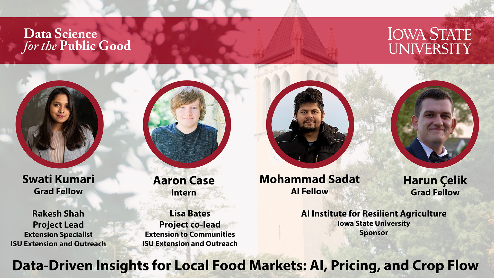
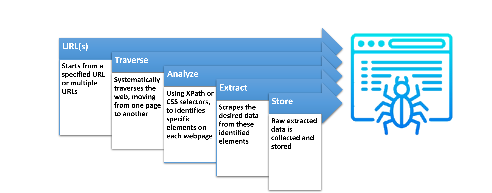
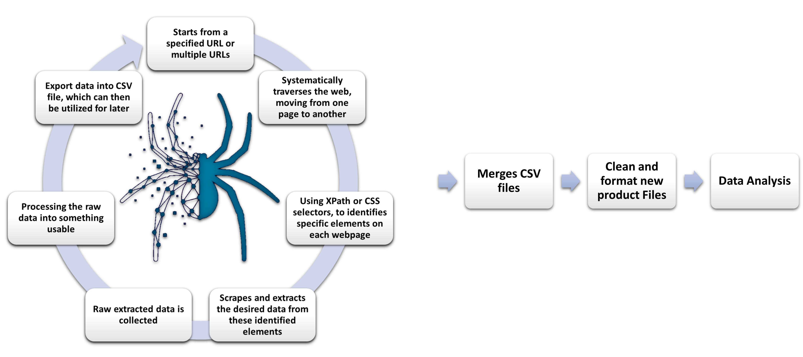
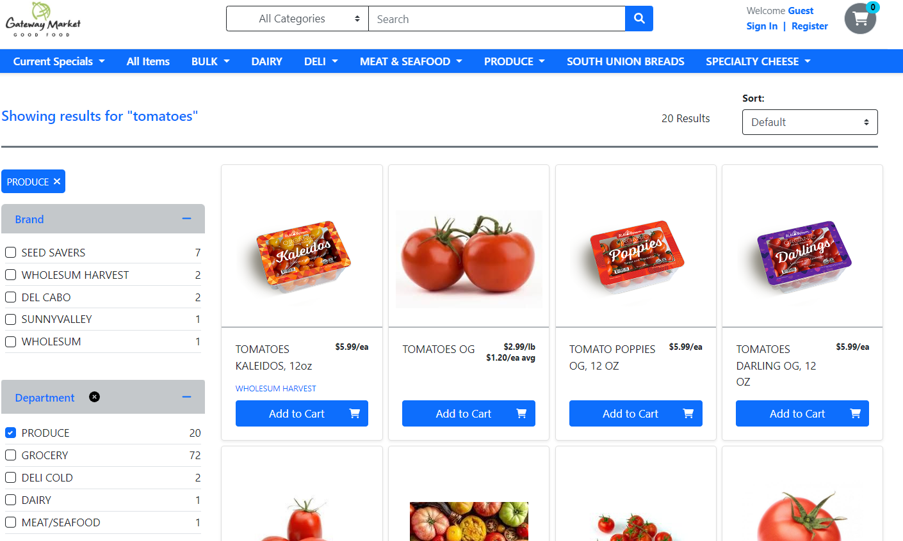
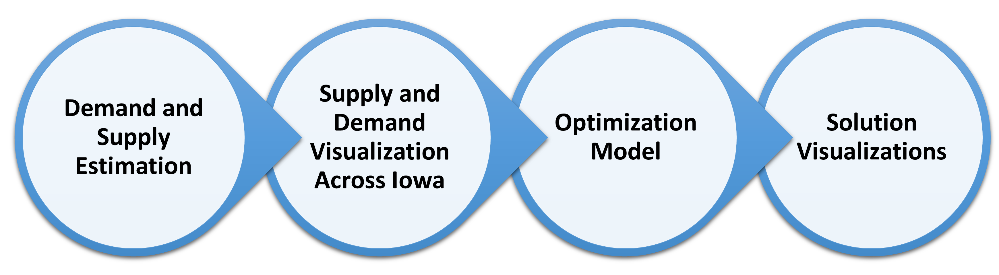

Data Driven Insights for Local Food Market:AI, Pricing and Crop Flow

Introduction
This project aims to enhance local food markets by providing valuable insights and optimizing the flow of crops. To achieve this, we have chosen three locally produced, non-processed food items: eggs, bacon, and tomatoes.
We initially focused on developing web-scraping spiders to collect data on crop prices. This data was utilized to create a comprehensive map of eggs and bacon prices across counties and cities. Subsequently, we conducted an in-depth analysis to understand the pricing dynamics of eggs and bacon in different counties. Finally, we employed optimization techniques to optimize the flow of crops, from supply to demand, with the aim of maximizing overall profit. By integrating web scraping, data analysis, and optimization techniques, our project provides valuable insights and tools for decision-making in the agricultural market.
What we plan to achieve:
Our primary goal is to create a comprehensive map showcasing the prices of eggs and bacon across different counties. This map will enable us to identify pricing trends, patterns, and customer preferences, thereby assisting businesses in making informed decisions.
In addition, we aim to develop efficient web-scraping spiders that automate data collection, saving time and enhancing the accuracy of the collected information.
Furthermore, we will showcase the effectiveness of these spiders by providing a specific crop example, demonstrating their ability to extract relevant data
Finally, we will optimize the flow of crops to maximize overall profit, taking into consideration factors such as demand estimation, supply dynamics, and transportation costs
Ultimately, we aim to provide insights, tools, and strategies that enhance decision-making and profitability within the local food market.
How we plan to achieve:
To achieve our objectives,
- We will employ a multi-faceted approach that combines web scraping, data analysis, and optimization techniques. We will collect comprehensive pricing data for eggs and bacon across different counties, employing data mining and analysis to identify trends and patterns. The collected data will be visualized in a comprehensive map that highlights these key insights.
- We will develop web-scraping spiders specifically tailored to gather data from selected websites. These spiders will automate the data collection process, ensuring a continuous and efficient flow of information for our comprehensive product database.
- With specific crops, we will showcase the capabilities of our web-scraping spiders, demonstrating their effectiveness in retrieving data for various agricultural products. This demonstration will highlight their value in supporting data-driven decision-making processes.
- To optimize the crop flow, we will employ demand estimation methodologies, analyze supply dynamics, consider transportation costs, and apply optimization techniques. By considering these factors, we can identify the most profitable routes and strategies for crop distribution, resulting in increased profitability and improved resource allocation.
Why it is important:
This project holds immense importance for several reasons.
Understanding the pricing dynamics of eggs and bacon is crucial for businesses to adapt their strategies, optimize pricing, and stay competitive. A comprehensive map will offer valuable insights into market trends, customer preferences, and suitable selling locations, empowering businesses to make informed decisions.
Automating data collection through web-scraping is crucial for timely and accurate information gathering. It saves time, improves data accuracy, and facilitates the creation of a comprehensive product database. This enables businesses to stay up-to-date with market trends and make informed decisions.
Optimizing crop flow is vital for maximizing profitability and resource allocation. By analyzing demand and supply dynamics, transportation costs, and market trends, businesses can identify the most profitable routes and strategies for crop distribution. This optimization minimizes waste, improves efficiency, and promotes sustainable agricultural practices.
Web Scraping: Automating Data Collection
From the success of last year’s project, we were able to gather extensive data on products using web scrapers. This year, we were assigned a similar task but with different products. However, we encountered a significant challenge.
Over the past year, the website we were scraping underwent significant changes, rendering our previous methods and processes obsolete. Upon closer examination, we discovered numerous unintentional flaws in our approach. Unfortunately, the scraper we had built was only capable of functioning under very specific circumstances, severely limiting our ability to collect data effectively even if we were able to repair it.
To ensure the success of our current project, it is crucial to gather a substantial amount of data. However, manually performing this task is not only time-consuming but also prone to errors and incredibly tedious. To overcome these challenges, we have developed web crawlers or spiders to automate the process. This automation not only saves time but also guarantees accurate and up-to-date data collection.
In simple terms, a Spider or Web crawler is a program or script specifically designed to automate website navigation and extract desired data. These spiders are not only capable of replicating our previous work but also surpassing the achievements of the previous year’s project by a considerable margin.
General Spider Procedure

Some examples of what the spider would be able to capture include various elements present on the web page. This encompasses text content, images, links, and more. Its vision would something similar to this:
<tag-name attribute-name= “attribute info”> … what we want (Element contexts) … </tag-name>
Our Spider Procedure

We needed to make multiple spiders to handle there own specific websites because not all websites are the same. Which is why our procedure is slightly more complex in comparison.
What the spiders were able to achieve




Data Analysis
Data analysis is an important tool for businesses and organizations to make better decisions. Through this analysis, we aim to uncover valuable insights, identify trends, patterns, and customer preferences, and make informed decisions to enhance profitability in the local food market. Let’s explore our data analysis approach and the exciting outcomes it will provide.
First let’s understand how data analysis works:

Our Data Analysis approach:
We conducted data collection on three products, Bacon, eggs and tomatoes, creating three new files for each. We then individually analyzed these files to extract useful insights. let’s see what useful information we could get from those data.
Product: Bacon


Product: Eggs


Product: Tomatoes


Optimization of the crop flow
In the previous section,
The price of the product varies across different stores and cities
Local food farms have opportunities to sell their product in high-priced areas
In this section,
Analyze crop distribution strategies for local food farms to maximize profit
Objective: Maximizing revenue through crop sales while considering transportation costs
Ignored production costs as they have no influence on crop distribution
We have chosen tomatoes as an example to illustrate our approach. Our analysis begins with estimating the demand and supply of tomatoes in various counties across Iowa. We will then focus on optimizing the distribution of tomatoes over an 8-week timeline, specifically from late July to mid-September.

Demand and supply estimation

Our estimation of the supply-demand ratio for tomatoes in Iowa is 0.06658, which closely aligns with the supply-demand ratio of 0.0380 mentioned in the IMPLAN model for Iowa vegetables and melons (not specifically tomatoes). This indicates that our estimate is a reasonable approximation.
For a detailed explanation of how we estimated the demand and supply, please refer to HERE.
Map visualization of demand and supply
The supply tab of the visualization indicates the level of demand for each county, with darker shades of blue representing higher demand. Conversely, the demand tab shows the required supply units for each county, with darker shades of golden to red indicating a greater need for supply. Finally, the demand-supply difference tab allows us to observe the disparity between demand and supply. In this tab, darker shades of red indicate a significant deficiency in supply, while darker shades of blue represent a surplus of supply.
Why a combined strategy is necessary?
Let’s imagine a county acting alone. In order to maximize its profit, the county will aim to sell its product to the counties that offers the highest price, while also taking transportation costs into account. In this scenario, every county will try to follow the same strategy.
As a result, there would be an influx of products, potentially leading to an oversupply where the demand may not match. Consequently, the price could decrease, while certain counties might face a shortage of tomatoes.
Therefore, it becomes crucial for the farmers (counties) to adopt a collaborative strategy.
Demonstration of the optimization model
To provide a demonstration, we select a small subset of counties (24 out of a total of 99 counties) where the gap between supply and demand is relatively modest.
In these selected counties, we simulated the prices of tomatoes using a normal distribution with a mean of 2.25 and a standard deviation of 0.25.
For our analysis, we took into account the Ford F-350 truck with a carrying capacity of 7640 lb and a fuel efficiency of 15 mpg. We assumed that the truck would travel in a straight line (Euclidean distance) from the origin to the destination. Additionally, we considered a gas price of $3.5/gallon.
We used Gurobi to solve the optimization problem.
Solution of the distribution problem
In the first image, the origin is represented by a bubble. When we hover over these bubbles, we can see the counties and the amounts that need to be transported from that specific county. In the next image, the bubble represents the destination. Hovering over the bubble reveals the quantities that should be received from different counties.
Profit retrained in collaborative strategy compared to operating individually
The chart displays the ratio between the highest possible profit that could be achieved if there was only one supplier and all the receivers, and the actual profit being generated with the current strategy. This ratio provides insights into the efficiency and effectiveness of the current approach.
Limitations
- Consideration of Euclidean distance instead of real-world road distance
- Consideration of $/Metric Ton/Mile instead of $/Truck-load/Mile
Future Work for the project
- General optimization and improvements to the spiders.
- Implementing parallel processing: Splits execution of code and running them simultaneously
- More spiders for additional websites
- Exploration of different web scraping methods
- After the data scrap, further insights can be generated by analyzing more data.
- Focus on the profit retained section during the crop flow optimization.
- Integration of where to plant the crops to the crop flow optimization model.
Conclusion
In conclusion, our project aimed to enhance local food markets by providing valuable insights and tools.
Our web-scraping spiders automate the process of data collection, which not only saves time but also improves accuracy. These spiders are designed to extract relevant data, thereby supporting data-driven decision-making. This tool serves a critical role in constructing a comprehensive dataset that is essential for AI applications, particularly in demand forecasting and crop management.
The insights and comprehensive map we have presented regarding the prices of eggs and bacon across various counties provide valuable information on trends and patterns. This empowers local food farms to make informed decisions and adjust their strategies accordingly, ensuring they stay competitive in the market.
We demonstrated an optimization model of crop flow aimed at maximizing profit. While we utilized estimated and mock data for the demonstration, having access to the original dataset in the future would enable accurate logistics and further enhance the effectiveness of the model.
In summary, this project holds significance as it provides valuable insights and tools that greatly enhance decision-making within the local food market. It empowers businesses to stay informed about market trends and optimize the allocation of resources, thereby contributing to the growth and long-term sustainability of the local food farm sector.
Data Sources
Store Websites Scraped
Software and tools:
- Python and packages (pandas, selenium, scrapy, gurobipy)
- Tableau
- Microsoft excel
- R - Quarto Blog
- Power BI
- Google geocoder API
- GitHub for Documentation
- Gurobi Optimizer